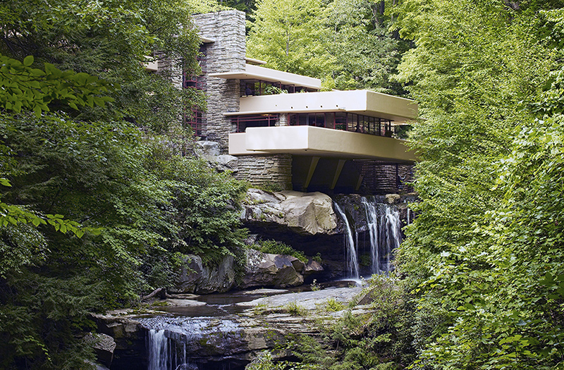

Fallingwater
— A 20th century architectural icon
Fallingwater is Frank Lloyd Wright's architectural masterpiece and it has its own Lego® set. Frank Lloyd Wright was a master of his craft. His genius is felt in the balance between the visionary and the pastoral; the interior and the exterior. The harmony of Fallingwater creates a transcendent and visceral experience and has inspired countless of his contemporaries today. Fallingwater is an iconic fixture in 20th Century Design.
I visited Fallingwater in May, shortly after winter had melted into spring. Although the rhododendrons had yet to bloom, the surrounding vegetation was a welcoming green. From a distance, the horizontal and vertical elements of the scene were the most striking. The horizontal pools of water are mimicked in the main horizontal elements of the house: the concrete slabs, or so-called cantilevers, which jut over the falls. The cantilevers are then set into the vertical elements: the hillside itself and the great stone columns, which mimic the vertical waterfall.

The utter simplicity of the relationship between the building and nature is impressive. The broad horizontality of Wright's simple, rectangular terraces reflects the wide ledges over which the water flows or drips, depending on the season and weather conditions. In contrast, the massive vertical element that centers the structure is constructed from stone quarried nearby that repeats the color and texture of the ledges. At the center of this core is the in-situ boulder that Wright left in place and used as the hearth for the living room fireplace, thereby rooting his design in the nature that inspired him. To maximize the Kaufmanns' and their guests' appreciation of the sounds of the waterfall and the cool humidity it brought, Wright used several different modern window treatments that must be seen in context to be fully appreciated.
Had the house been placed in view of the falls, one would passively look at them every so often. We have a tendency to take in visual images and quickly sort them, reducing nature to something easily defined. But sound is in a way harder to process, let alone quickly define. By placing the house above the falls, one is actively, and continuously engaged with the falls.
Wright doesn't give precedence to the continual over the momentary. Instead, the house is both boundless and bound, infinite and finite, stone and liquid.